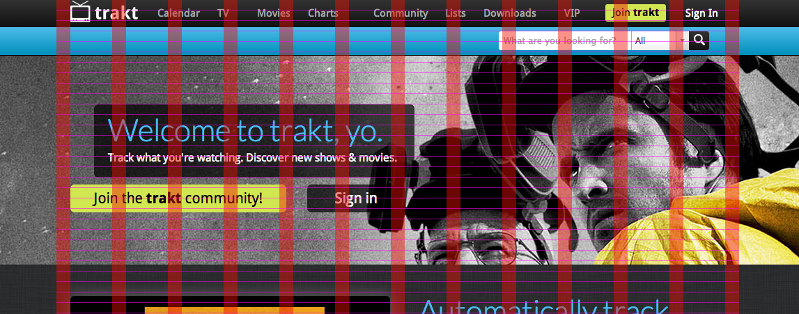
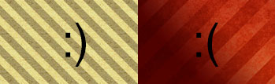
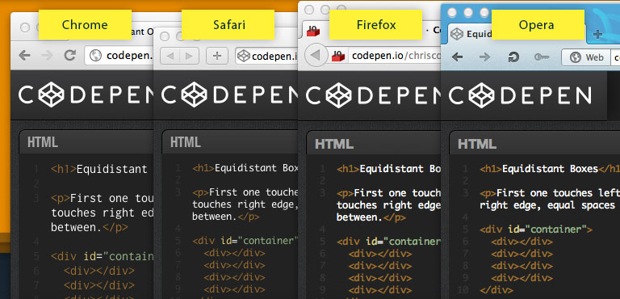

Recortar o Layout
Não existe mais
Práticas do designer que otimizam o desenvolvimento front-end
Compilação das melhores práticas de criação de PSD. photoshopetiquette.com
Uso de grid
Grids são as estruturas do layout e permitem a criação de padrões visuais.
- Sempre usar grid
- Respeitar o grid (bordas contam dentro do grid)
- Elementos fora da linha de grid forçam a criação de estilos específicos

Imagens
- Não usar multiply para ocultar o fundo em elementos
- Usar vetores sempre que for possível
- Utilizar smart objects com precaução
- Utilizar Layers comps para os diferentes states (ex. dropdown)
- Organização de layers e uso de cores
- Criar guia de estilos e segui-la
- Fundos e patterns

Icones
A tendência é criar uma fonte com o set de icones utilizado no projeto, permitindo assim alteração de cores e tamanhos sem perdas. Isto só é possível seguindo alguns pontos:
- Icones do mesmo tamanho (depois poderão ser alterados igual que tipografía) + info
- Arquivo Illustrator com todo o set de icones, cada um num artboard diferente e do mesmo tamanho
- Pixel perfection, não existe meio pixel
- Excluir layers desnecessários
- Não esquecer o favicon (ou psd quadrado com a imagem, no mínimo 260x260)
- Não esquecer os estilos e comportamentos da validação de formulário
Fontes / Tipografias
Os borwsers não entendem de design

Do PSD ao Browser
- Unidades em PX enteros nunca decimais ex: 10.58px
- Quebra de linha em blocos de texto (Enter ↵ no meio de um frase)
- Aplicar bold/italic da fonte e não do photoshop (no browser será diferente)
- Fontface dos OS
- Line Height (linha de inicio alinhada com elemento respeita o line height)
- Colocar junto o PSD o arquivo da fonte
- Qual a fonte sans e serif alternativa de sistema caso não carrege a utilizada?
- Criar padrões ex: Titulos Camel-case ou não
- Usar webfonts, preferencialmente google fonts.
- Uso de fontes de SO
- uso de varias fontes não padrão
http://photoshopetiquette.com/
Bordas estao dentro do grid
Não multiply
recorte (smart objects)
Png vs Gif
Minficação otimização img
estrutura (nomes ,cores, ordem)
bootstrap manter padrao
Favicon
Padrão de fundo manter o patttern
Icones
Svg art boards names icons ingles
tamanhos proporcionais.
http://icomoon.io/#docs/font-metrics
Forms
-erros de formulario
http://sixrevisions.com/web_design/collaboration-tips-for-designers-working-with-developers/
sd